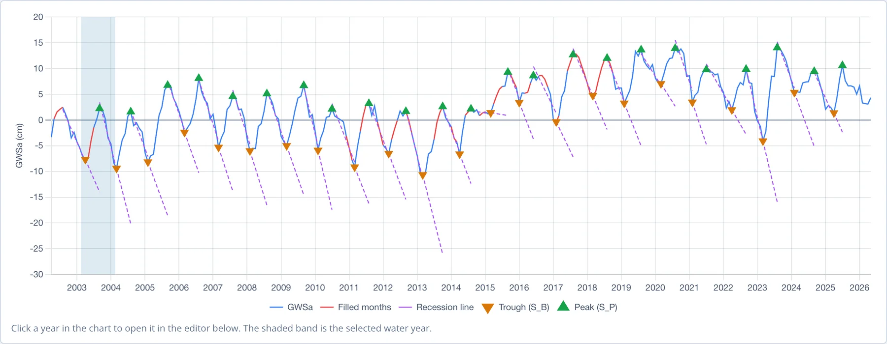
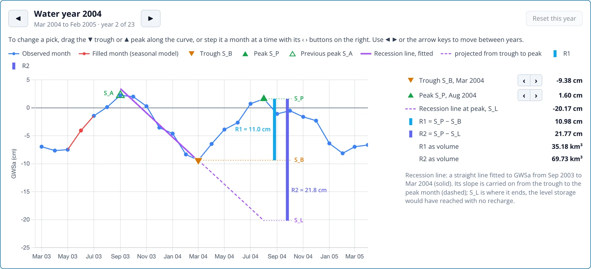

Años Hidrológicos y Selección de Puntos
La segunda sección de la página Recharge Analysis divide el registro en años hidrológicos y selecciona el valle y el pico de cada uno. La aplicación los selecciona automáticamente, como se describe en El Método WTF. Cada punto seleccionado se puede revisar y mover a mano en el editor del año.
El año hidrológico
Water year starts in (el año hidrológico comienza en) define el mes calendario en que comienza cada año hidrológico. Por defecto es el mínimo habitual encontrado en la verificación de estacionalidad, mostrado como "(auto, the usual low)". Cámbialo si sabes que la hidrología de la región requiere otro inicio. El análisis usa solo años hidrológicos completos, así que un año parcial en cualquiera de los extremos del registro queda fuera. Los años hidrológicos se nombran por el año calendario en que comienzan: para el Northern Midwest Aquifer System, el año hidrológico 2004 va de marzo de 2004 a febrero de 2005.
Cambiar el mes de inicio desplaza todos los años hidrológicos, así que borra los puntos que hayas fijado a mano. Reset all picks los borra sin cambiar el mes de inicio.
El gráfico general
El gráfico muestra toda la serie rellenada con los puntos seleccionados de cada año:

- la GWSa observada en azul y los meses rellenados en rojo, para que destaque un punto seleccionado sobre un mes estimado
- cada valle (SB) como un ▼ naranja y cada pico (SP) como un ▲ verde
- la línea de recesión de cada año en morado, ajustada desde el pico anterior hasta el valle y prolongada hasta el mes del pico
Un vistazo al gráfico muestra si los puntos siguen el ciclo: un ▼ en el fondo de cada descenso y un ▲ en la cima del ascenso siguiente. La banda sombreada marca el año hidrológico abierto en el editor. Haz clic en cualquier punto de otro año para abrirlo.
El editor del año
El editor debajo del gráfico muestra un año hidrológico de cerca, con los meses que determinan su recarga:

El gráfico comienza en el valle del año anterior, así que muestra el ascenso del año anterior hasta SA, la recesión desde SA hasta el valle de este año, y el ascenso de este año hasta el pico. La leyenda de arriba enumera cada marca:
| Marca | Significado |
|---|---|
| Línea y puntos azules | meses observados |
| Línea y puntos rojos | meses rellenados por el modelo estacional |
| ▼ naranja, S_B | el valle de este año |
| ▲ verde, S_P | el pico de este año |
| △ verde hueco, S_A | el pico anterior, donde comienza la línea de recesión |
| Línea morada continua | la línea de recesión, ajustada a GWSa desde S_A hasta el valle |
| Línea morada discontinua | la línea de recesión prolongada desde el valle hasta el mes del pico, terminando en S_L |
| Barra azul claro | R1, desde S_B hasta S_P |
| Barra morada | R2, desde S_L hasta S_P |
Unas guías punteadas llevan SP, SB y SL hasta las barras, para que veas qué niveles abarca cada estimación. El panel de la derecha muestra el valle y el pico con sus meses y valores, SL, R1 y R2 en cm y, para una región, como volúmenes en km³. Una nota debajo de los valores indica los meses sobre los que se ajustó la línea de recesión y las notas de la tabla para ese año (consulta Resultados).
En el año hidrológico 2004, el valle cae en marzo de 2004 en −9.38 cm y el pico en agosto de 2004 en 1.60 cm, así que R1 es 10.98 cm. La línea de recesión se ajusta desde el pico de septiembre de 2003 (SA) hasta el valle de marzo. Prolongada hasta agosto, alcanza SL = −20.17 cm, así que R2 es 21.77 cm. Sobre los 320,368 km² del sistema acuífero, eso equivale a 35.2 km³ (R1) a 69.7 km³ (R2) de recarga.
El primer año hidrológico no tiene pico anterior. Su SA es el mes más alto antes de su valle, una vez eliminada la tendencia de largo plazo.
Navegar entre los años
◀ y ▶, a ambos lados del título del año, pasan al año hidrológico anterior y al siguiente, igual que las flechas ← y → del teclado. El título muestra los meses que abarca el año hidrológico y su posición en el registro ("year 2 of 23"). Hacer clic en una fila de la tabla de resultados también abre ese año.
Cambiar un punto seleccionado
Revisa el valle y el pico de cada año. Un punto puede estar mal seleccionado cuando un mes con ruido, a menudo un pico anómalo en los datos de GRACE o un mes rellenado, queda más alto o más bajo que el verdadero punto de inflexión. Hay dos formas de mover un punto:
- Arrastra el valle ▼ o el pico ▲ a lo largo de la curva. El marcador se ajusta a los meses mientras arrastras, y el año se recalcula cuando lo sueltas.
- Muévelo un mes a la vez con los botones ‹ y › junto al valle o al pico en el panel de la derecha.
Los puntos se limitan a los meses que el método permite. El pico se mantiene dentro de su año hidrológico y después del pico del año anterior. El valle se mantiene entre el pico anterior y el pico de este año. Un botón de paso se desactiva cuando el mes siguiente violaría estos límites.
Mover un punto recalcula todo el análisis. Un pico fija SA para el año siguiente, así que mover un pico también cambia la línea de recesión del año siguiente, su R2 y posiblemente su valle. Los años con un punto fijado a mano se marcan con ✎ en la tabla de resultados y con "set by hand" en sus notas. Reset this year devuelve un año a los puntos automáticos, y Reset all picks hace lo mismo para todos los años.
Los puntos fijados a mano se conservan hasta que cierras la página. Para guardarlos, descarga el CSV, que registra los puntos seleccionados y marca los fijados a mano.